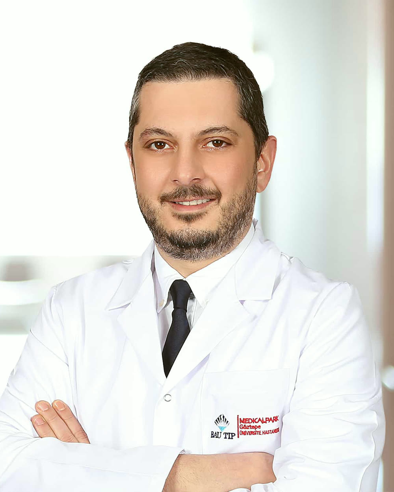

Kaan Gökçen
Prof. Dr. Kaan Gökçen, üroloji uzmanıdır. Prostat büyümesinde holmiyum lazer enükleasyonu (HoLEP), böbrek, mesane, prostat ve testis kanserlerinde cerrahi tedavi, laparoskopik ürolojik cerrahi ve böbrek taşı tedavileriyle ilgilenmektedir. Hastalarını Medical Park Göztepe Hastanesi'nde kabul eder.

Özgeçmiş
Kaan Gökçen tıp eğitimini Gazi Üniversitesi Tıp Fakültesi'nde tamamladı. Üroloji uzmanlık eğitimini 2007-2012 yılları arasında Uludağ Üniversitesi Tıp Fakültesi Üroloji Anabilim Dalı'nda aldı. Bu dönemde laparoskopik radikal sistektomi, laparoskopik adrenalektomi ve retrograd intrarenal cerrahi serilerini konu alan çalışmalarda yer aldı.
Uzmanlığının ardından Osmaniye Devlet Hastanesi'nde üroloji uzmanı olarak çalıştı ve hastanede laparoskopik ürolojik cerrahi uygulamalarını yürüttü. 2015 yılında Sivas Cumhuriyet Üniversitesi Tıp Fakültesi Üroloji Anabilim Dalı'nda öğretim üyesi olarak göreve başladı; laparoskopik ve endoskopik cerrahi, taş hastalığı ve ürolojik onkoloji alanlarında klinik ve akademik çalışmalarını sürdürdü.
İstanbul'da İstanbul Okan Üniversitesi ve Bahçeşehir Üniversitesi tıp fakültelerinde görev yaptı. Bugün Medical Park Göztepe Hastanesi'nde prostat büyümesi, ürolojik kanserler, taş hastalığı, idrar kaçırma ve çocuk ürolojisi alanlarında hasta kabul etmektedir.
Ürolojik Cerrahi Derneği'nin temel laparoskopi becerileri kursunda eğitmen olarak görev aldı, ulusal ve uluslararası kongrelerde sunumlar yaptı. 2017 yılında Endoüroloji Derneği tarafından bir cerrahi teknik çalışmasıyla ödüle layık görüldü.
Eğitim ve görevler
- Gazi Üniversitesi Tıp FakültesiTıp eğitimi
- Uludağ Üniversitesi Tıp FakültesiÜroloji uzmanlık eğitimi
- Osmaniye Devlet HastanesiÜroloji uzmanı
- Sivas Cumhuriyet Üniversitesi Tıp FakültesiÜroloji Anabilim Dalı, öğretim üyesi
- İstanbul Okan Üniversitesi Tıp FakültesiÜroloji, öğretim üyesi
- Bahçeşehir Üniversitesi Tıp FakültesiÜroloji, öğretim üyesi
- Medical Park Göztepe HastanesiÜroloji, profesör
Klinik ilgi alanları
Prostat büyümesi ve HoLEP
Holmiyum lazerle prostat enükleasyonu, ilaç ve cerrahi karar süreci
Ürolojik kanserler
Böbrek, mesane, prostat ve testis tümörlerinde tanı ve cerrahi tedavi
Laparoskopik ürolojik cerrahi
Nefrektomi, parsiyel nefrektomi, adrenalektomi, piyeloplasti
Endoüroloji ve taş hastalığı
RIRS, PCNL, mini ve mikro PNL, üreteroskopi
Çocuk ürolojisi
İnmemiş testis, hipospadias, çocuklarda taş
İdrar kaçırma
Kadın ve erkekte kaçırma tipleri ve tedavi basamakları
Akademik çalışmalar
YÖK Akademik kayıtlarına göre 25 makale ve 59 kongre bildirisi; Google Scholar'da 188 atıf (Ekim 2026).